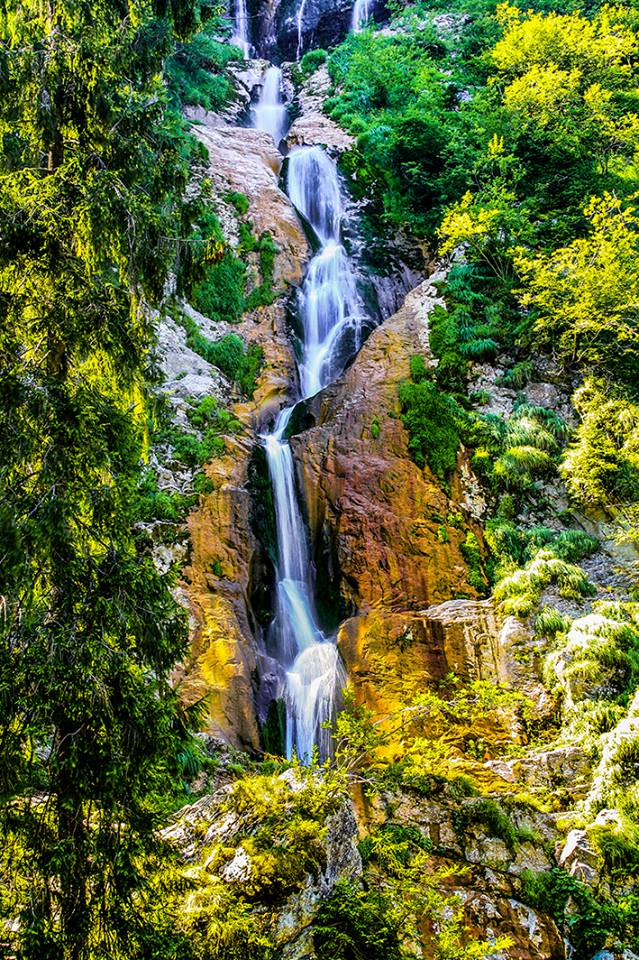
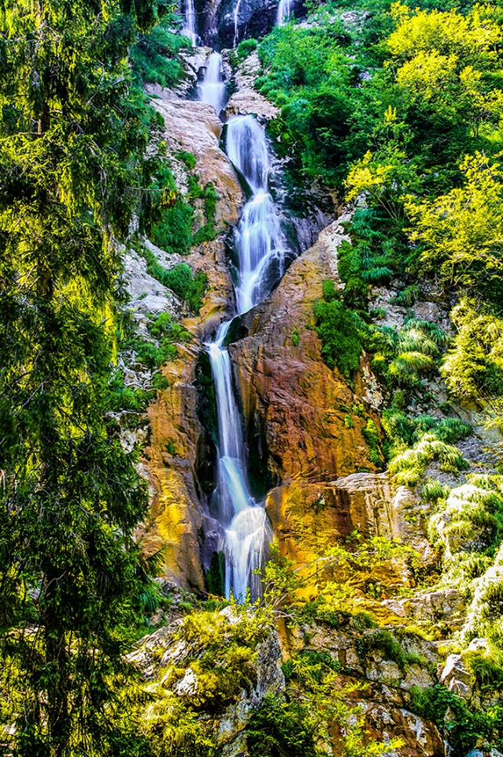

La o aruncătură de băț de stațiunea Borșa,
apele pe care zăpada și ploile le adună
cu sârguință într-un circ glaciar, se răsfrâng cu tot elanul peste Podul Cailor.
Ce reușește să facă apa în vâltoarea ei? Reușește să dea naștere celei mai mari cascade
de pe întinsul României care, privită de jos către înaltul celor 90 de metri ai săi,
îți pare ca și cum cerul s-a deschis și aruncă de acolo șuvoaie argintii peste Pâmântul
fără de-apărare.Iar zgomotul apei ce cade în trepte aduce cu el o liniște cerebrală.
Ca și cum gândurile nu s-ar mai auzi pentru că tu nu ai mai fi deloc capabil să le legi
firul și numai apa și-ar mai putea croi loc printre cotloanele minții.
Arzi de nerăbdare și parc-ai vrea să te teleportezi
degrabă într-acolo? Ei bine,
chiar dacă ai zbughit-o deja în mașină și te îndrepți spre stațiunea Borșa, află că
de-acolo poți, fie să iei telecabina, fie, dacă bocancii promit să mai țină de-o urcare
pe munte și pelerina de ploaie nu te-a dezamăgit niciodată, să te încumeți la o drumeție
de o oră jumate care să te înalțe vreo 200 metri. Și știi cum o să-ți pară drumul până
acolo? Ca și cum imnuri folclorice românești ți-ar cânta simpatice la ureche, iar
munții românești, așa cum numai ei știu să o facă, ți-ar înrobi simțurile.
Click aici pentru a vă întoarce la pagina inițială.